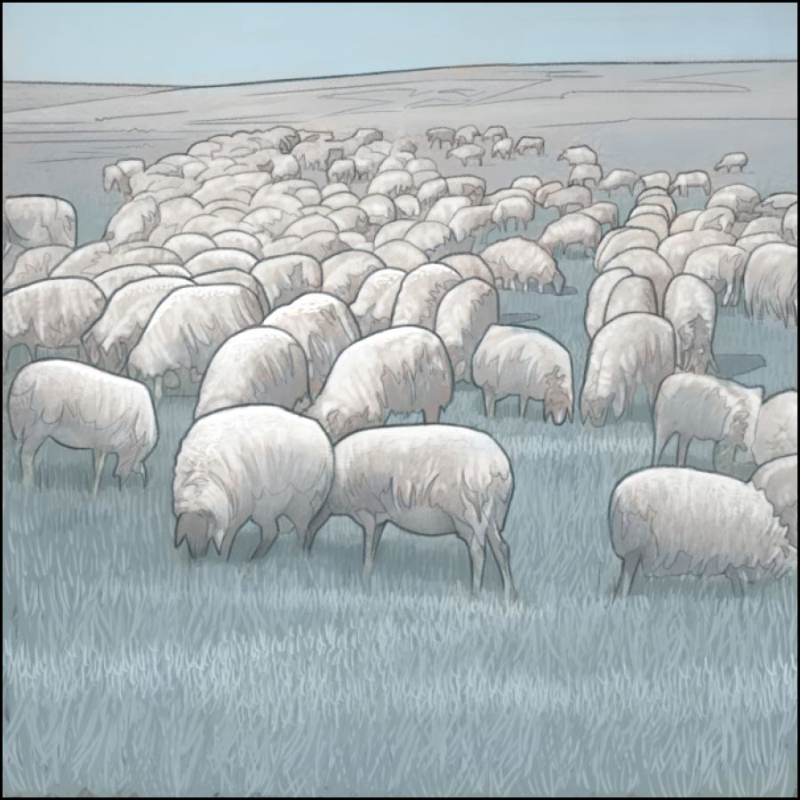
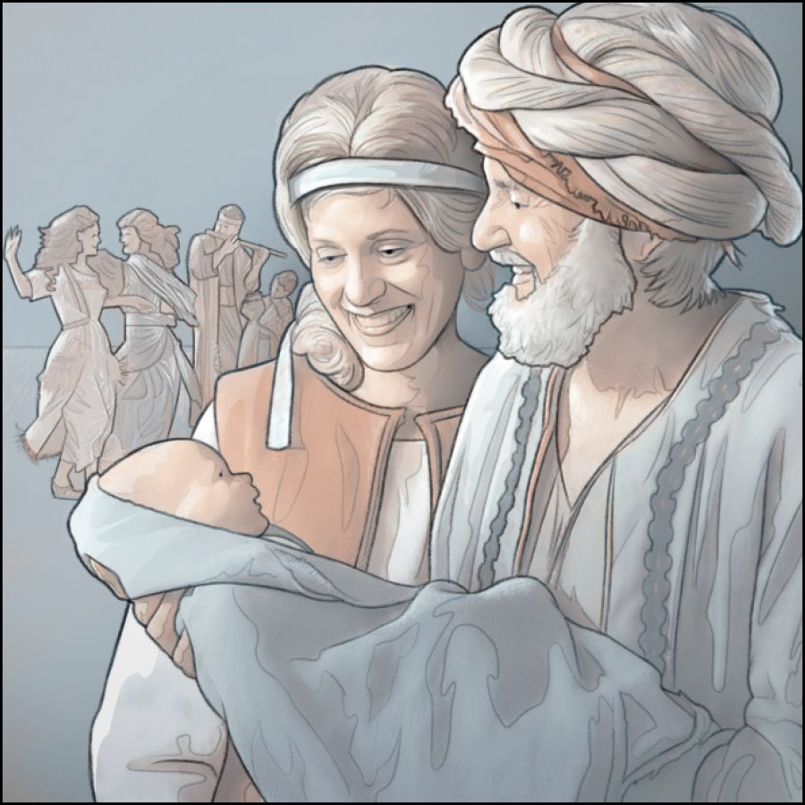

Jehovah expected Job to pray for Eliphaz, Bildad, and Zophar
Jehovah told Eliphaz, Bildad, and Zophar to go to Job and offer up a burnt sacrifice
Job was expected to pray in their behalf
After Job prayed for them, he was blessed
Jehovah greatly blessed Job for his faith and endurance
Jehovah removed Job’s tribulation, restoring him to good health
Job received true comfort from friends and relatives for all that he had suffered
 Jehovah restored Job’s prosperity, giving him twice the amount that he had lost
 Job and his wife came to have ten more children

Job lived for another 140 years and enjoyed seeing four generations of his family line